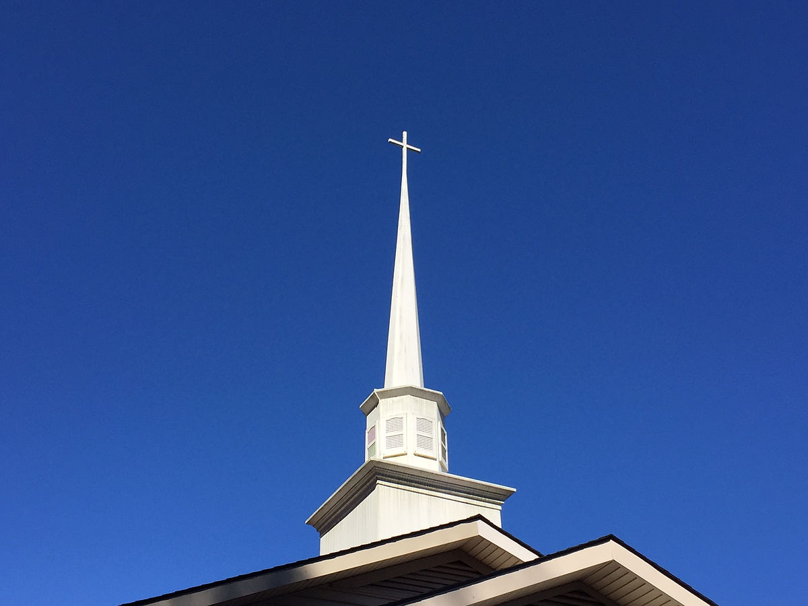

Where Is It?
58 Zion Hill Rd, Zirconia, NC 28790.
Zion Hill Baptist Church is a traditional, independent Baptist church serving families in the Zirconia and Henderson County area with congregational singing, KJV preaching, and Christ-centered fellowship.
Most guests ask three questions first: Where is it? When is it? What should I expect?
58 Zion Hill Rd, Zirconia, NC 28790.
Sunday School begins at 9:45 AM and Morning Worship starts at 11:00 AM.
Traditional KJV-based preaching, congregational singing, and a church family that welcomes you warmly.
Whether you are a lifelong local resident or just passing through the mountains, we would be honored to meet you.
Our Sunday morning broadcast airs at 8:05 AM on WHKP AM 1450 / 107.7 FM.
Worship rooted in Scripture, shaped by fellowship, and surrounded by the beauty of the Blue Ridge.



Learn how God used a 1914 tent revival to begin a church that still stands firm today.
Read a clear statement of our historic Baptist convictions and KJV foundation.
Listen to audio messages and stay connected to the teaching ministry through the week.